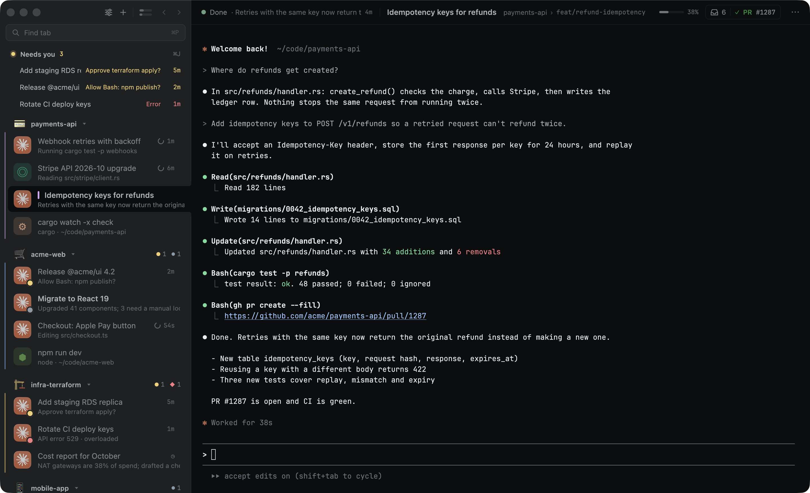
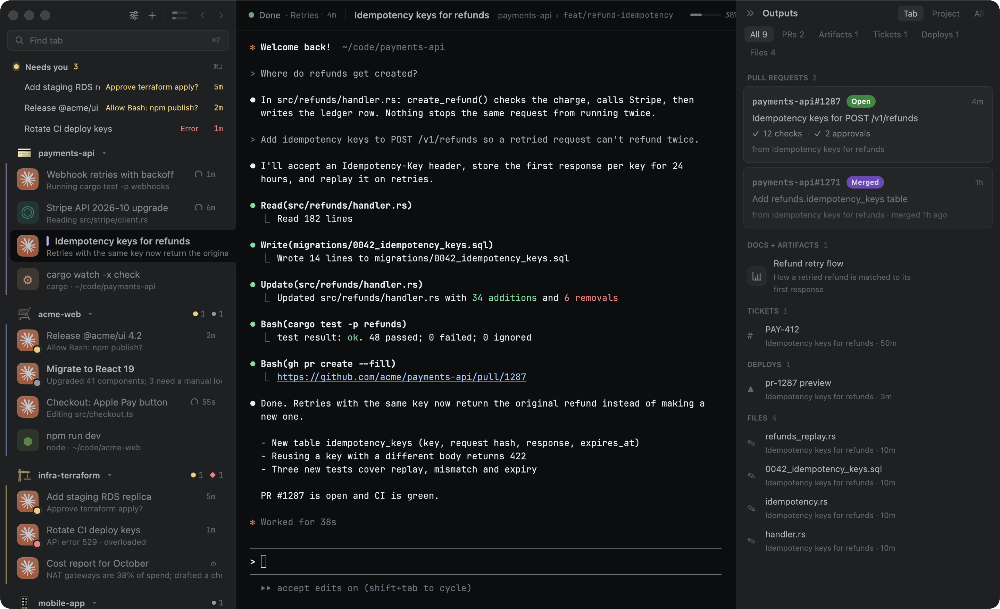
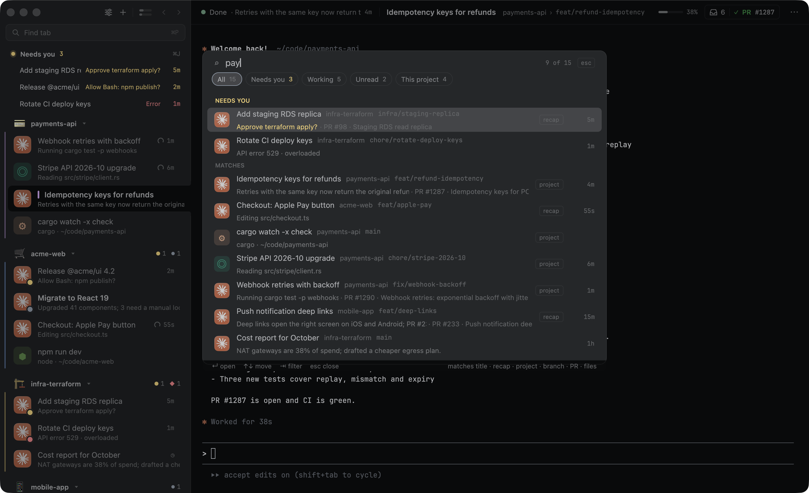
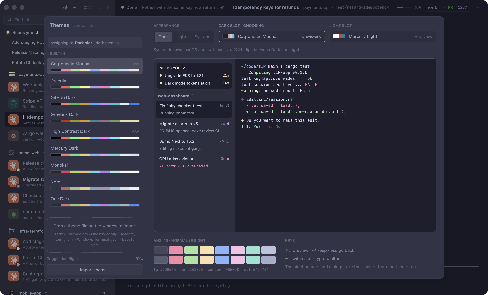

Run ten agents without holding ten in your head.
T1K is a macOS terminal built to lower the load of running many coding agents at once. It shows which session needs you and takes you there, so you stop checking tabs.

⏺ Hint labels now stay stable across redraws. ⏺ Bash(cargo test -p t1k-terminal hints) ⎿ test result: ok. 6 passed; 0 failed ⏺ Next: wire the labels into the overlay. ✻ Pondering… (12s · esc to interrupt)
One place to look
Amber means it needs you
Every tab shows its agent’s state. Only a tab waiting on you turns amber; the rest stay quiet.
⌘J goes there
Jump to the tab that has waited longest. Press again for the next.
⌘O shows them all
One screen with every session: what it’s doing, its goal and its last recap.
Switch without starting over
T1K finds the sessions open in your old terminal, whether that’s Warp, iTerm2, Terminal, Ghostty, kitty, WezTerm or tmux, and brings them over with Claude sessions resumed. It can match that terminal’s font and colors too.
Everything each session made
PRs with their title, checks and review (“Approved by ana”, “Changes requested”), artifacts and docs by type, tickets and changed files, per session, one click away.

Find a tab by what you remember
⌘P searches titles, projects, branches, PRs and files. With the optional helper it ranks by meaning: “the tab where I was fixing login”.

Restart without losing your place
Tabs and scrollback come back after a quit or an update, and Claude sessions pick up where they stopped. You see “Restoring 12 of 31” while they return.
⏺ Hint labels now stay stable. ⏺ Bash(cargo test hints) ⎿ 6 passed
Make it yours
22 themes plus import, coding fonts installed in one click, sidebar density and detail, session colors, emoji, app or image tab icons, your own keys, and a short setup that walks through it.

Works with
- Claude Code
- Codex
- Gemini CLI
- Antigravity
- Grok
Install
- 1Download and unzipGet the zip above.
- 2Move T1K to ApplicationsThen open it like any app.
- 3Bring your tabs overSetup finds your old terminal’s sessions and connects your agents. Or run
t1k setup-agents.